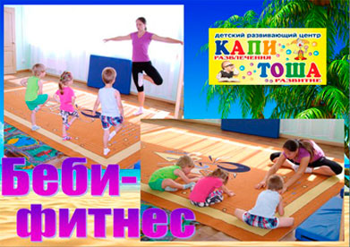
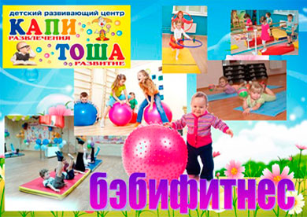

В программе «Бэби-фитнес» используется яркое, красочное детское спортивно-игровое оборудование, а все занятия проводятся в увлекательной игровой форме. Фитнес для детей – это возможность дать Вашему ребенку все то, что необходимо ему, чтобы его душа и тело развивались гармонично. Ведь детский фитнес в «КАПИТОШЕ» – это целый комплекс занятий, упражнений и игр, которые помогут Вашему ребенку не только чувствовать свое тело и забыть о любых болезнях, но и развить чувство такта и ритма, гибкость и силу, а также научиться взаимодействовать со сверстниками и взрослыми.
 Малыши знакомятся с элементами различных видов спорта, проходят полосу препятствий, ползают, бегают, прыгают. Детишки хотят прокладывать «мостики» через речку, измерять «шпагатиками» свою комнату, кувыркаться и смеяться. Занятие, как маленький праздник, здесь некогда скучать, каждому найдется веселое занятие: «путешествие в Африку», «сплав на байдарках по горным рекам», «преодоление препятствий при переходе через скалистые горы» и т. д.
Занятия благотворно влияют на формирование:
- - правильной осанки,
- - развитие основных мышечных групп,
- - укрепление связок и сухожилий,
- - профилактику плоскостопия,
- - развитие координации движений,
- - развитие гибкости и пластичности тела,
- - освоение пространства и умения ориентироваться в нём.